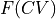
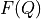
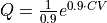
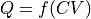

Tutorial 7 - Transformations of 1D FEP and kinetics
Introduction
In this notebook, we investigate the impact of the choice of the collective variable on the free energy profile as well as the kinetics. The main conclusion of this notebook will be that the shape of the free energy profile depends on the choice of the CV (as well as for example the difference in free energy between the reactant state minimum and the transition state maximum), however, the derived kinetic rate constant (and hence also the related phenomenological free energy barrier) will not depend on this choice.
[1]:
%load_ext autoreload
%autoreload 2
[2]:
from thermolib.thermodynamics.fep import SimpleFreeEnergyProfile, plot_profiles
from thermolib.thermodynamics.histogram import Histogram1D
from thermolib.tools import read_wham_input, blav, decorrelate
from thermolib.thermodynamics.trajectory import ColVarReader
from thermolib.thermodynamics.cv import CoordinationNumber, LinearCombination, FunctionCV
from thermolib.kinetics.rate import RateFactorEquilibrium
from thermolib.units import *
import numpy as np, os
[3]:
prefix = 'advanced_wham1D_transformations_'
FEP and rate with original CV
We start be constructing the reference FEP in terms of the original CV, i.e. the CV along which the biasing was performed.
[4]:
bins = np.arange(-1.7, 1.7, 0.02)
fn_meta = 'data/formic_acid_dimer/wham_input.txt'
[5]:
colvar_reader = ColVarReader([0], units=['au'])
temp, biasses, trajectories = read_wham_input(
fn_meta, colvar_reader, 'colvars/COLVAR_%s.dat',
bias_potential='Parabola1D', q01_unit='au', kappa1_unit='kjmol',
)
We decorrelate the data using the built-in decorrelate routine from the thermolib.tools module…
[6]:
corrtimes = decorrelate(trajectories, plot=True)
/home/lvduyfhu/miniconda3/envs/test/lib/python3.14/site-packages/thermolib/tools.py:960: OptimizeWarning: Covariance of the parameters could not be estimated
pars, pcovs = curve_fit(function, upper_envelope_indices, upper_envelope_values, **curve_fit_kwargs)
<Figure size 640x480 with 0 Axes>

…and construct the corresponding FEP
[7]:
hist = Histogram1D.from_wham(bins, trajectories, biasses, temp, error_estimate='mle_f_cov', corrtimes=corrtimes, Nscf=10000)
fep = SimpleFreeEnergyProfile.from_histogram(hist, temp=temp)
fep.process_states(lims=[-1.55,-0.2,0.2,1.55])
fep.set_ref(ref='r')
fep.plot()
SCF Converged!
---------------------------------------------------------------------
TIMING SUMMARY
initializing: 00h 00m 00.000s
histograms : 00h 00m 00.011s
bias poten. : 00h 00m 00.006s
solve scf : 00h 00m 00.165s
error est. : 00h 00m 00.518s
TOTAL : 00h 00m 00.702s
---------------------------------------------------------------------

We now also proceed by computing the rate constant according to this CV choice. For this we use all settings as discussed in the tutorial on basic kinetics.
[8]:
#CV definition
C1 = CoordinationNumber([[0,9]], r0=1.4*angstrom)
C2 = CoordinationNumber([[7,9]], r0=1.4*angstrom)
C3 = CoordinationNumber([[2,4]], r0=1.4*angstrom)
C4 = CoordinationNumber([[5,4]], r0=1.4*angstrom)
CV = LinearCombination([C1,C2,C3,C4], [1., -1., -1., 1.])
[9]:
CV_TS_Delta = 0.05
CV_TS_lims = [fep.ts.get_cv()-CV_TS_Delta, fep.ts.get_cv()+CV_TS_Delta]
rate = RateFactorEquilibrium(CV, CV_TS_lims, temp, CV_unit='au')
[10]:
fn = '%s/colvars/u64.xyz' %os.path.dirname(fn_meta)
rate.process_trajectory(fn, finish=False, momenta='analytical')
rate.finish()
[11]:
A, A_dist = rate.result_blav()
rate_results = rate.compute_rate(fep)
fep.plot(rate=rate)
Rate factor with block averaging:
---------------------------------
A = 1.745 10^+13 +- 1.224 10^+10 au/s (9591 TS samples, int. autocorr. time = 49.423 timesteps)

FEP and rate in terms of alternative CV
We are going to transform the FEP from  towards  with . This can be done using the transform routine of the BaseFreeEnergyProfile class (as well as it child class SimpleFreeEnergyProfile). For that, we first derive the transformation function as well as its derivative:
[12]:
def function(cv):
return np.exp(0.9*cv)
def derivative(cv):
return 0.9*np.exp(0.9*cv)
[13]:
fep2 = fep.transform_function(function, derivative=derivative)
fep2.process_states(lims=[-np.inf,0.9,1.4,4.4])
#fep2.set_ref(ref='r')
fep2.plot(flims=[-5,30])
WARNING: lowest point on new CV grid is larger than original CV grid. You will potentially lose data by recollection. Set return_new_fes to True to force the recollection and store to new FES.
WARNING: lowest point on new CV grid is larger than original CV grid. You will potentially lose data by recollection. Set return_new_fes to True to force the recollection and store to new FES.
WARNING: lowest point on new CV grid is larger than original CV grid. You will potentially lose data by recollection. Set return_new_fes to True to force the recollection and store to new FES.
WARNING: lowest point on new CV grid is larger than original CV grid. You will potentially lose data by recollection. Set return_new_fes to True to force the recollection and store to new FES.
WARNING: lowest point on new CV grid is larger than original CV grid. You will potentially lose data by recollection. Set return_new_fes to True to force the recollection and store to new FES.
WARNING: lowest point on new CV grid is larger than original CV grid. You will potentially lose data by recollection. Set return_new_fes to True to force the recollection and store to new FES.
WARNING: lowest point on new CV grid is larger than original CV grid. You will potentially lose data by recollection. Set return_new_fes to True to force the recollection and store to new FES.
WARNING: lowest point on new CV grid is larger than original CV grid. You will potentially lose data by recollection. Set return_new_fes to True to force the recollection and store to new FES.
WARNING: lowest point on new CV grid is larger than original CV grid. You will potentially lose data by recollection. Set return_new_fes to True to force the recollection and store to new FES.
WARNING: lowest point on new CV grid is larger than original CV grid. You will potentially lose data by recollection. Set return_new_fes to True to force the recollection and store to new FES.
WARNING: lowest point on new CV grid is larger than original CV grid. You will potentially lose data by recollection. Set return_new_fes to True to force the recollection and store to new FES.
WARNING: lowest point on new CV grid is larger than original CV grid. You will potentially lose data by recollection. Set return_new_fes to True to force the recollection and store to new FES.
WARNING: lowest point on new CV grid is larger than original CV grid. You will potentially lose data by recollection. Set return_new_fes to True to force the recollection and store to new FES.
WARNING: lowest point on new CV grid is larger than original CV grid. You will potentially lose data by recollection. Set return_new_fes to True to force the recollection and store to new FES.
WARNING: lowest point on new CV grid is larger than original CV grid. You will potentially lose data by recollection. Set return_new_fes to True to force the recollection and store to new FES.
WARNING: lowest point on new CV grid is larger than original CV grid. You will potentially lose data by recollection. Set return_new_fes to True to force the recollection and store to new FES.
WARNING: lowest point on new CV grid is larger than original CV grid. You will potentially lose data by recollection. Set return_new_fes to True to force the recollection and store to new FES.
WARNING: lowest point on new CV grid is larger than original CV grid. You will potentially lose data by recollection. Set return_new_fes to True to force the recollection and store to new FES.
WARNING: lowest point on new CV grid is larger than original CV grid. You will potentially lose data by recollection. Set return_new_fes to True to force the recollection and store to new FES.
WARNING: lowest point on new CV grid is larger than original CV grid. You will potentially lose data by recollection. Set return_new_fes to True to force the recollection and store to new FES.
WARNING: lowest point on new CV grid is larger than original CV grid. You will potentially lose data by recollection. Set return_new_fes to True to force the recollection and store to new FES.
WARNING: lowest point on new CV grid is larger than original CV grid. You will potentially lose data by recollection. Set return_new_fes to True to force the recollection and store to new FES.
WARNING: lowest point on new CV grid is larger than original CV grid. You will potentially lose data by recollection. Set return_new_fes to True to force the recollection and store to new FES.
WARNING: lowest point on new CV grid is larger than original CV grid. You will potentially lose data by recollection. Set return_new_fes to True to force the recollection and store to new FES.
WARNING: lowest point on new CV grid is larger than original CV grid. You will potentially lose data by recollection. Set return_new_fes to True to force the recollection and store to new FES.
WARNING: lowest point on new CV grid is larger than original CV grid. You will potentially lose data by recollection. Set return_new_fes to True to force the recollection and store to new FES.
WARNING: lowest point on new CV grid is larger than original CV grid. You will potentially lose data by recollection. Set return_new_fes to True to force the recollection and store to new FES.
WARNING: lowest point on new CV grid is larger than original CV grid. You will potentially lose data by recollection. Set return_new_fes to True to force the recollection and store to new FES.
WARNING: lowest point on new CV grid is larger than original CV grid. You will potentially lose data by recollection. Set return_new_fes to True to force the recollection and store to new FES.
WARNING: lowest point on new CV grid is larger than original CV grid. You will potentially lose data by recollection. Set return_new_fes to True to force the recollection and store to new FES.
WARNING: lowest point on new CV grid is larger than original CV grid. You will potentially lose data by recollection. Set return_new_fes to True to force the recollection and store to new FES.
WARNING: lowest point on new CV grid is larger than original CV grid. You will potentially lose data by recollection. Set return_new_fes to True to force the recollection and store to new FES.
WARNING: lowest point on new CV grid is larger than original CV grid. You will potentially lose data by recollection. Set return_new_fes to True to force the recollection and store to new FES.
WARNING: lowest point on new CV grid is larger than original CV grid. You will potentially lose data by recollection. Set return_new_fes to True to force the recollection and store to new FES.
WARNING: lowest point on new CV grid is larger than original CV grid. You will potentially lose data by recollection. Set return_new_fes to True to force the recollection and store to new FES.
WARNING: lowest point on new CV grid is larger than original CV grid. You will potentially lose data by recollection. Set return_new_fes to True to force the recollection and store to new FES.
WARNING: lowest point on new CV grid is larger than original CV grid. You will potentially lose data by recollection. Set return_new_fes to True to force the recollection and store to new FES.
WARNING: lowest point on new CV grid is larger than original CV grid. You will potentially lose data by recollection. Set return_new_fes to True to force the recollection and store to new FES.
WARNING: lowest point on new CV grid is larger than original CV grid. You will potentially lose data by recollection. Set return_new_fes to True to force the recollection and store to new FES.
WARNING: lowest point on new CV grid is larger than original CV grid. You will potentially lose data by recollection. Set return_new_fes to True to force the recollection and store to new FES.
WARNING: lowest point on new CV grid is larger than original CV grid. You will potentially lose data by recollection. Set return_new_fes to True to force the recollection and store to new FES.
WARNING: lowest point on new CV grid is larger than original CV grid. You will potentially lose data by recollection. Set return_new_fes to True to force the recollection and store to new FES.
WARNING: lowest point on new CV grid is larger than original CV grid. You will potentially lose data by recollection. Set return_new_fes to True to force the recollection and store to new FES.
WARNING: lowest point on new CV grid is larger than original CV grid. You will potentially lose data by recollection. Set return_new_fes to True to force the recollection and store to new FES.
WARNING: lowest point on new CV grid is larger than original CV grid. You will potentially lose data by recollection. Set return_new_fes to True to force the recollection and store to new FES.
WARNING: lowest point on new CV grid is larger than original CV grid. You will potentially lose data by recollection. Set return_new_fes to True to force the recollection and store to new FES.
WARNING: lowest point on new CV grid is larger than original CV grid. You will potentially lose data by recollection. Set return_new_fes to True to force the recollection and store to new FES.
WARNING: lowest point on new CV grid is larger than original CV grid. You will potentially lose data by recollection. Set return_new_fes to True to force the recollection and store to new FES.
WARNING: lowest point on new CV grid is larger than original CV grid. You will potentially lose data by recollection. Set return_new_fes to True to force the recollection and store to new FES.
WARNING: lowest point on new CV grid is larger than original CV grid. You will potentially lose data by recollection. Set return_new_fes to True to force the recollection and store to new FES.
WARNING: lowest point on new CV grid is larger than original CV grid. You will potentially lose data by recollection. Set return_new_fes to True to force the recollection and store to new FES.
WARNING: multivariate normal sampling failed using Cholesky decomposition, switching to method eigh.
WARNING: multivariate normal sampling failed using Cholesky decomposition, switching to method eigh.
WARNING: multivariate normal sampling failed using Cholesky decomposition, switching to method eigh.
WARNING: multivariate normal sampling failed using Cholesky decomposition, switching to method eigh.
WARNING: multivariate normal sampling failed using Cholesky decomposition, switching to method eigh.

We clearly see that the free energy profile is not the same anymore as before. We now compute the rate according to the transformed CV and see if that has changed. For this, we use the CollectiveVariable child class FunctionCV to define a function of another CV:
[14]:
Q = FunctionCV(CV, function, derivative)
We will need to translate the limits on the TS region in CV space given by
- :nbsphinx-math:`begin{align}
CV^{TS}_{lims} = [CV^{TS}-dCV,CV^{TS}+dCV]
end{align}`
to the limits in Q space using the transformation function  and its derivative  , which we do as follows:
, which we do as follows:
- :nbsphinx-math:`begin{align}
Q^{TS}_{lims} &= [Q^{TS}-dQ,Q^{TS}+dQ] \ Q^{TS} &= f(CV^{TS}) \ dQ &= f’(CV^{TS})cdot dCV
end{align}`
[15]:
Q_TS_Delta = derivative(fep.ts.get_cv())*CV_TS_Delta
Q_TS_lims = [fep2.ts.get_cv()-Q_TS_Delta, fep2.ts.get_cv()+Q_TS_Delta]
print(Q_TS_lims)
rate2 = RateFactorEquilibrium(Q, Q_TS_lims, temp, CV_unit='au')
[np.float64(1.0002116225025508), np.float64(1.0909272526572253)]
[16]:
fn = '%s/colvars/u64.xyz' %os.path.dirname(fn_meta)
rate2.process_trajectory(fn, finish=False, momenta='analytical', verbose=True)
rate2.finish()
Estimating rate factor from trajectory data/formic_acid_dimer/colvars/u64.xyz for TS=[1.000,1.091] au using analytical momentum integration
[17]:
A2, A2_dist = rate2.result_blav()
rate2_results = rate2.compute_rate(fep2)
fep2.plot(rate=rate2,flims=[-5,30])
Rate factor with block averaging:
---------------------------------
A = 1.605 10^+13 +- 2.160 10^+10 au/s (7070 TS samples, int. autocorr. time = 1.202 timesteps)
As we can see, the phenomenological barriers (both forward and backward) remain consistent with those computed with the original CV.